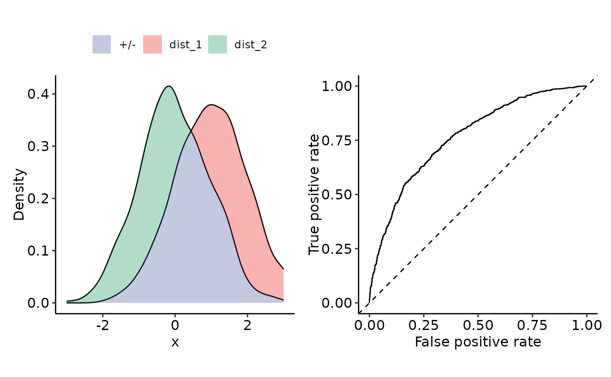

Plot density + ROC
plot_density_ROC_empirical.RdGiven positive and negative distributions, plot the corresponding densities and their ROC-curves.
Arguments
- values_grouped
List-like element. (also data.frames or matrices) where the elements are the samples from the different distributions. E.g.: # A tibble: 1,000 × 2 dist_1 dist_2
1 0.974 0.257 2 0.196 -0.780 3 -0.125 -0.264 4 0.701 0.260 - length.out
See
plot_density_empirical(). Granularity of density plot (pure visualization).- xmin
- xmax
- ...
Further arguments to
perf_ROC()
Examples
sim_samples <- sim(
list(
"dist_1" = function(x) rnorm(x, mean = 1, sd = 1),
"dist_2" = function(x) rnorm(x, mean = 0, sd = 1)
),
do_melt = FALSE,
length.out = 1000
)
plot_density_ROC_empirical(sim_samples)
#> Setting levels: control = dist_1, case = dist_2
#> Setting direction: controls > cases
